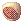

File list
This special page shows all uploaded files.
{kind=link}
{kind=link}
| Date | Name | Thumbnail | Size | User | Description | Versions |
|---|---|---|---|---|---|---|
| 01:54, 23 September 2015 | 1.png (file) |  |
21 KB | Brownie | SFXGuide11 | 1 |
| 01:05, 22 September 2015 | Four leaf clover.gif (file) |  |
160 bytes | AloeLeaflet | 1 | |
| 01:01, 22 September 2015 | Silverwork.gif (file) |  |
360 bytes | AloeLeaflet | 1 | |
| 01:01, 22 September 2015 | Asgardblessing.gif (file) |  |
228 bytes | AloeLeaflet | 1 | |
| 00:43, 22 September 2015 | Expert ring.gif (file) |  |
348 bytes | AloeLeaflet | 1 | |
| 00:42, 22 September 2015 | Orlglov.gif (file) |  |
337 bytes | AloeLeaflet | 1 | |
| 00:31, 22 September 2015 | Immuneshield.png (file) | 1,005 bytes | AloeLeaflet | 1 | ||
| 00:26, 22 September 2015 | Hurricanefury.png (file) |  |
524 bytes | AloeLeaflet | 1 | |
| 00:20, 22 September 2015 | Opecoat.png (file) |  |
352 bytes | AloeLeaflet | 1 | |
| 00:14, 22 September 2015 | Chewedpencil.gif (file) |  |
136 bytes | AloeLeaflet | 1 | |
| 00:14, 22 September 2015 | Rainbowscarf.gif (file) |  |
207 bytes | AloeLeaflet | 1 | |
| 00:10, 22 September 2015 | Bframeglass.png (file) | 313 bytes | AloeLeaflet | 1 | ||
| 00:06, 22 September 2015 | Airshipcpthat.png (file) | 810 bytes | AloeLeaflet | 1 | ||
| 03:07, 18 September 2015 | Selfie.png (file) |  |
311 KB | AloeLeaflet | 1 | |
| 02:51, 18 September 2015 | Johan.png (file) | 51 KB | AloeLeaflet | 1 | ||
| 02:24, 18 September 2015 | Comodofruitdealer.png (file) |  |
202 KB | AloeLeaflet | 1 | |
| 02:24, 18 September 2015 | Mastelafruitdealer.png (file) | 248 KB | AloeLeaflet | 1 | ||
| 02:23, 18 September 2015 | Sweetnspicysaucedealer.png (file) | 173 KB | AloeLeaflet | 1 | ||
| 02:23, 18 September 2015 | Emptytooldealer.png (file) | 209 KB | AloeLeaflet | 1 | ||
| 02:23, 18 September 2015 | Emptybottledealer.png (file) | 297 KB | AloeLeaflet | 1 | ||
| 02:23, 18 September 2015 | Alchemguild.png (file) |  |
492 KB | AloeLeaflet | 1 | |
| 02:19, 18 September 2015 | Skelb.png (file) | 295 bytes | AloeLeaflet | 1 | ||
| 02:19, 18 September 2015 | Orcv.png (file) |  |
455 bytes | AloeLeaflet | 1 | |
| 02:19, 18 September 2015 | Softsilk.png (file) |  |
462 bytes | AloeLeaflet | 1 | |
| 02:02, 18 September 2015 | Wolfblood.png (file) | 418 bytes | AloeLeaflet | 1 | ||
| 02:02, 18 September 2015 | Savagemeat.png (file) |  |
478 bytes | AloeLeaflet | 1 | |
| 02:02, 18 September 2015 | Redherb.png (file) |  |
423 bytes | AloeLeaflet | 1 | |
| 02:02, 18 September 2015 | Petitetail.png (file) |  |
430 bytes | AloeLeaflet | 1 | |
| 02:01, 18 September 2015 | Noodles.png (file) |  |
915 bytes | AloeLeaflet | 1 | |
| 02:01, 18 September 2015 | Largecookpot.png (file) |  |
529 bytes | AloeLeaflet | 1 | |
| 02:01, 18 September 2015 | Icetea.png (file) | 686 bytes | AloeLeaflet | 1 | ||
| 02:01, 18 September 2015 | Icepiece.png (file) |  |
419 bytes | AloeLeaflet | 1 | |
| 02:01, 18 September 2015 | Icecrystal.png (file) | 316 bytes | AloeLeaflet | 1 | ||
| 02:01, 18 September 2015 | Herbstew.png (file) | 1,004 bytes | AloeLeaflet | 1 | ||
| 02:00, 18 September 2015 | Finenoodle.png (file) |  |
402 bytes | AloeLeaflet | 1 | |
| 02:00, 18 September 2015 | Droseratentacle.png (file) | 351 bytes | AloeLeaflet | 1 | ||
| 02:00, 18 September 2015 | Coolgravy.png (file) |  |
493 bytes | AloeLeaflet | 1 | |
| 02:00, 18 September 2015 | Cookinguide.png (file) |  |
473 bytes | AloeLeaflet | 1 | |
| 02:00, 18 September 2015 | Cookingskewer.png (file) | 301 bytes | AloeLeaflet | 1 | ||
| 02:00, 18 September 2015 | Comodofruit.png (file) |  |
561 bytes | AloeLeaflet | 1 | |
| 02:00, 18 September 2015 | Coldice.png (file) |  |
404 bytes | AloeLeaflet | 1 | |
| 01:59, 18 September 2015 | Cocktail.png (file) |  |
539 bytes | AloeLeaflet | 1 | |
| 01:59, 18 September 2015 | Brisket.png (file) |  |
627 bytes | AloeLeaflet | 1 | |
| 01:59, 18 September 2015 | Blackcharcoal.png (file) | 493 bytes | AloeLeaflet | 1 | ||
| 01:59, 18 September 2015 | Beefhead.png (file) | 574 bytes | AloeLeaflet | 1 | ||
| 01:59, 18 September 2015 | Bbq.png (file) | 760 bytes | AloeLeaflet | 1 | ||
| 01:41, 18 September 2015 | Concentrationpotion.png (file) |  |
478 bytes | AloeLeaflet | 1 | |
| 01:34, 18 September 2015 | Sweetsauce.png (file) | 423 bytes | AloeLeaflet | 1 | ||
| 01:34, 18 September 2015 | Royaljelly.png (file) |  | 473 bytes | AloeLeaflet | 1 | |
| 01:33, 18 September 2015 | Sppotion.png (file) |  |
519 bytes | AloeLeaflet | 1 |
{kind=link}
{kind=link}
{kind=link}
{kind=link}
{kind=link}
{kind=link}
{kind=link}
{kind=link}
{kind=link}
{kind=link}
{kind=link}
{kind=link}
{kind=link}
{kind=link}